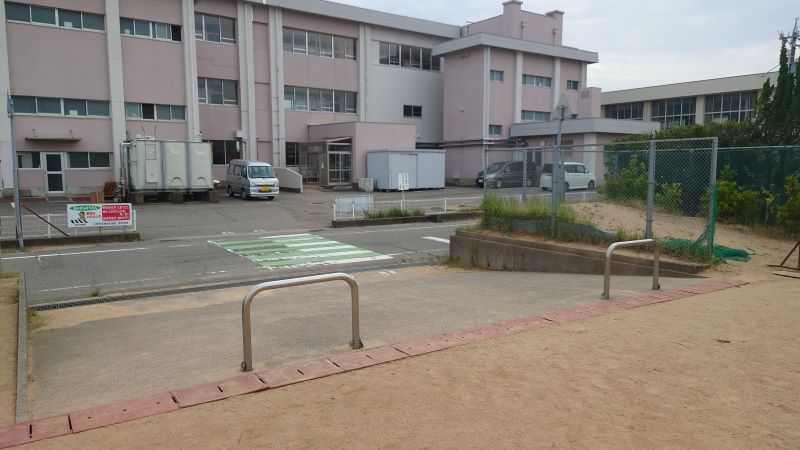
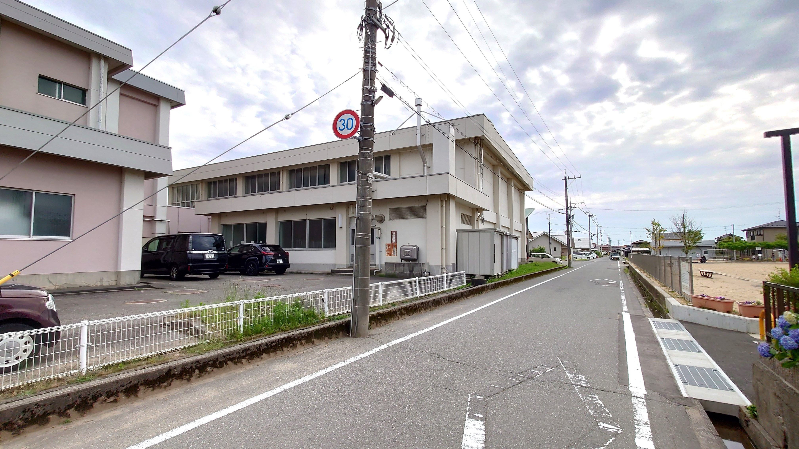
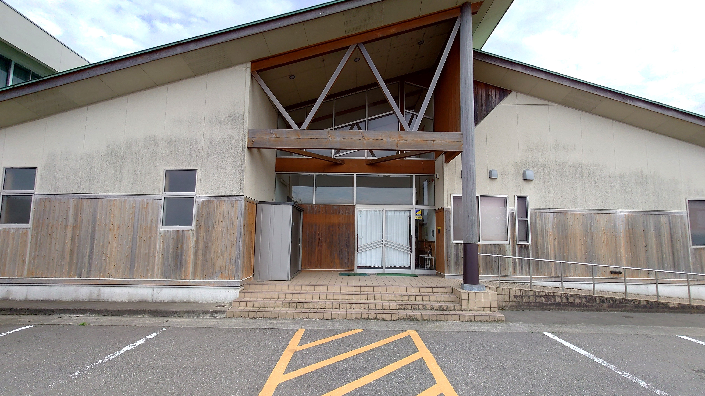

現在の各町内の得点状況および総合成績の経過が、以下にリアルタイムで更新・共有されます！
| 順位 | 得点競技 | 綱引き | リレー |
|---|---|---|---|
| 1 | 7点 | 10点 | 10点 |
| 2 | 6点 | 8点 | 8点 |
| 3 | 5点 | 6点 | 6点 |
| 4 | 4点 | 4点 | 4点 |
| 5 | 3点 | 3点 | 3点 |
| 6 | 2点 | 2点 | 2点 |
| 7 | 1点 | 1点 | 1点 |
| 大領 | 千木野 | 南浅井 | 不動島 ・清六 |
吉竹 | 北浅井 | 扇 | |
|---|---|---|---|---|---|---|---|
| 令和7年度 ボウリング |
4 | 5 | 7 | 1 | 2 | 6 | 3 |
| 令和7年度 ニュースポーツ |
4 | 6 | 6 | 1 | 4 | 2 | 7 |
| （経過小計） | 8 | 11 | 13 | 2 | 6 | 8 | 10 |
| 令和8年度 社会体育大会 |
- | - | - | - | - | - | - |
| 総合得点※ |
令和8年度社会体育大会に出場する各分団のチーム情報です。
※進行状況や天候等により、競技順序・内容は調整される場合がございます。
【内容】整列、開会宣言、優勝旗返還、大会長挨拶、来賓祝辞、競技上の注意、選手宣誓、準備体操
【出場者】小学生未満（保護者同伴可）
【出場者】小学1・2年生（各団 男女各最大3名）
【出場者】小学3・4年生（各団 男女各最大3名）
【出場者】小学5・6年生（各団 男女各最大3名）
【出場者】各団 男子5名、女子5名（高校生以上）、回し手2名
【出場者】各団 50歳以上10名（男女問わず）
【出場者】各団 8名（男女問わず）
【玉入れ出場者】各団 男女各10名（うち60歳以上2名含む）
【ピンポンリレー出場者】各団 50歳以上 男子3名・女子3名、小学生3名
【出場者】各団 男子12名（うち50歳以上2名）、女子5名
【構成（計6名、各半周）】
小学1〜3年生 (1名) → 小学4〜6年生 (1名) → 30歳〜40歳 (2名) → 20歳〜30歳未満（中・高校生可） (2名)
【構成（計8名）】
小学1〜3年生 [半周] (1名) → 小学4〜6年生 [半周] (1名) → 40歳以上 [半周] (1名) → 30歳〜40歳未満 [半周] (2名) → 20歳〜30歳未満（中・高校生可） [1周] (3名)
【内容】整列、成績発表、表彰式（大会・総合）、閉会宣言
小松市立苗代小学校 運動場（グラウンド）特設レイアウト
・近隣の田んぼ等にゴミを捨てないようにお願いいたします。発生したゴミは各自・各町内でお持ち帰りください。
・学校敷地内は「禁酒・禁煙」です。指定の喫煙所以外での喫煙は固くお断りいたします。
運動場トイレのほか、校舎・講堂内の水洗トイレをご利用いただけます。
1. 運動場トイレ（左上部）
2. ピーチクパーチク館トイレ
駐車場スペースが非常に少ないため、当日は「乗り合せ、徒歩、自転車等」のご利用をお願いいたします。（※運動場周辺等に駐輪場スペースは用意されています）
農道での駐車は「原則片側駐車」とします。
現場周辺には一部駐車禁止区域がございますので、必ず現地の指導員・案内指示に従ってください。
運動場（グラウンド）から、一番近くて綺麗な「ピーチクパーチク館内水洗トイレ」までの行き方をステップ順にご案内します。

運動場から道路へ出て、校舎（ぴーちくぱーちく館）方面へ進みます。

道なりに直進してください。

ピーチクパーチク館入口を入ってすぐに男女別水洗トイレがございます。
各町の体育協会より順次ご案内いたします。皆様の積極的なご参加をお待ちしております！
夏休みの期間中、世代を問わず町内対抗で楽しめる伝統のボウリング大会。初心者も気軽に参加いただけます。
さわやかな秋晴れのもと、ゴルフを通じて地域住民の親睦を深め、健康増進を図るための親善コンペです。
誰もがすぐに楽しめて、過度な運動負荷のないニュースポーツ各種目を体験・対抗する笑顔あふれるイベントです。
社会体育大会のより良い運営・発展のため、参加者の皆様からのご意見を広く募集しております。スマートフォンから1〜2分で簡単にご回答いただけます。ご協力を心よりお待ちしております。